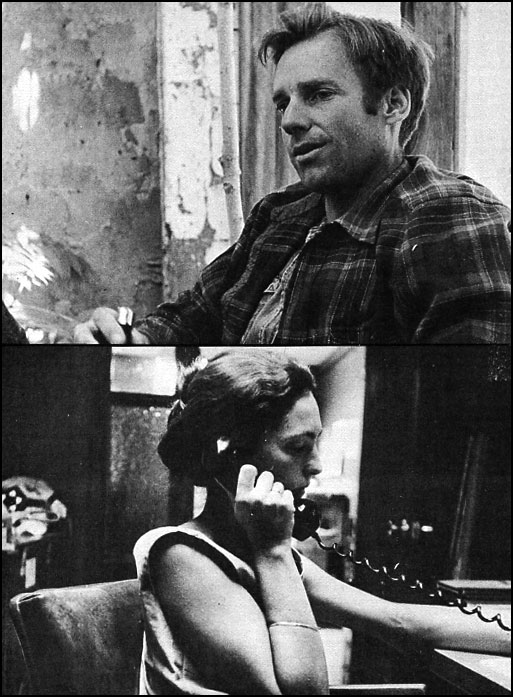
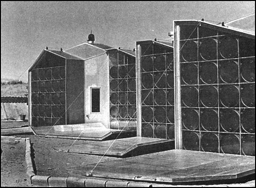
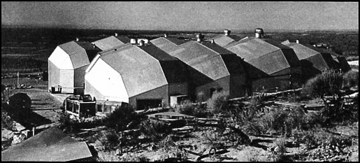

During the late 60's, a group of "dirty hippies" - as they were then known - dropped out of consumerist America's mainstream and began settling in the arid reaches of this country's Southwest. There, they usually eked out a living by raising organic gardens, doing odd jobs, selling craft products ... and just plain scrounging.
Well, undoubtedly, some of those dropouts really were the ne'er-do-wells that their parents thought they were. But others in the crowd were genuine visionaries, philosophers, social critics and Renaissance men ... and women. Steve and Holly Baer certainly fit into the second category.
The Baers, as so many of us have done since the mid-50's, did some rambling from one school and occupation to another and saw a little of the world before they came to rest near Albuquerque, New Mexico in the last half of the 60's. Steve was especially restless. He was capable enough to make a way for himself and his family wherever he went ... but he couldn't seem to convince himself that he belonged in any of our culture's neat little pigeonholes.
The answer, of course, was simple (whether the Baers knew it at the time or not) ... they'd just have to start building a new culture. Which they, and some others, proceeded to do.
The Baers - in alliance with a few of the Southwest's young communes - began by showing the world that very inexpensive dome housing could be fabricated from the tops of junked automobiles (Steve's out-of-print manual, Dome Cookbook, is still the classic reference on the subject).
Steve then moved on to develop zomes (open, airy buildings that offer much greater structural flexibility than domes). At almost the same time, he plunged deeply into make-it-work-on-a-practical-basis solar energy research. Eventually, with two friends, Steve founded Zomeworks, a company that designs and manufactures zomes, solar water heaters and other imaginative hardware that springs from the fertile brains of Baer and the young innovators that are drawn to him.
Holly has stood close beside Steve during his struggle to develop his ideas. She has made many meaningful contributions to his work and done much valuable work of her own. Together, they make an impressive team.
Cass Wester visited Zomeworks and the Baers' new home (a solar-heated zome constructed largely of aluminum sandwich panels) in early June of this year. At Zomeworks, Steve told Cass something about where the Baers have been and where they're headed ... and Holly took her on a tour of the couple's unusual house.
Steve, let's begin at the beginning. How did you actually get into this whole thing?
That question is hard to answer because I'd have to go back and explain all my childhood and my parents' childhood and about my friends and everything. That's really difficult . . . so I'll just give you the outlines of what I've been doing for the last ten years or so.
I went to Amherst College in Massachusetts for a couple of years and I went to UCLA for a year or two and then I went back to Amherst ... and I never quite fit in to that whole college thing. Then I joined the Army in 1960 and got married and Holly and I went to Germany for three years. I learned to speak an approximation of German and, after I got out of the Army, I went to school in Zurich.
You must have liked it over there.
Zurich is really a neat town. I worked part time as a welder in a metal shop while we were there and it was fun living in Zurich and fun going to school there. But I began to see that I wasn't going to get a degree or become a conventional engineer or any of those things, so I just kept trying to get my education my own way ... the way I wanted it and the way I saw it, rather than the way people were trying to tell me - probably quite wisely - it should be.
Along about then I began thinking of building a house, and I studied the geometry of polyhedra to see if I could figure out some simple ways of building such forms. And I did begin building them in the shop where I was employed. The people there were really generous. They let me work on these things on Saturdays and in the evenings and I designed and fabricated joints for structures and just got very involved in the whole idea.
But why polyhedra? Did any one person or book inspire you to begin experimenting with such forms?
No ... well, actually Holly had some little kid's toys made from polyhedra and she built one of these things and I started looking at it and I just blew my mind and that was kind of the starting point. Then I went out and found some mathematics books that described the geometry of polyhedra and convex figures. This wasn't too difficult since I had always been fascinated by math. It was the subject I had spent the most time on in school and, as a matter of fact, was what I was studying at the time.
And?
Well, next we left Zurich and came back to the States and moved to Albuquerque where I worked as a surveyor and welder. I was welding trailer frames for Fruehof and Holly had a job and we didn't spend much of what we were making. On top of that, Holly had some inherited money that had been accumulating while I was in the Army and pretty soon we had a good deal of cash. After awhile l sort of gave up trying to make a living in Albuquerque - it's hard getting jobs here - and said, "We've got this money and I'm just going to spend it and study and do what I think I can do" . . . and I began to experiment more and more with structures.
I built a kind of shed in back of our house in Corralis and then I found out that the people at Drop City were building domes and I went up there and helped them for awhile. Then they came down and helped me. We kind of inspired each other and really got the creative juices flowing. We built the first structures from car tops. We chopped the tops out of over a thousand cars and I think I chopped over 700 automobiles myself. It was a lot of fun.
Did you get the car tops for free?
No, we paid 25 cents apiece for them. They're a good building material in a way, except that getting stuff from junkyards like that is very bad for your whole mentality. You basically become a parasite on something you criticize all the time. You can't help it when you're chopping cars apart ... you can't help noticing how poorly they're made. Still, you're depending on them. You're feeding on something you hate. It really doesn't work out, although I think it's a fine thing to do for a few years.
Well, anyway ... so we built buildings from car tops at Drop City and people from Drop City came down and stayed with us in Albuquerque. We built and did solar heating experiments ... solar heated a dome in 1967 with a big chimney - a rock storage bin - down the side of a hill. Many of those first things didn't actually work very well. I didn't know what I was doing.
Wait a minute. You were recycling car tops into domes and zomes and all of a sudden you started trying to heat the buildings with solar energy. That seems like a rather big jump ... how did you make it?
I had always been fascinated, kind of indirectly, with solar energy. I used to do things like take a thermometer and measure the temperature of streams, for example, and I'd find that some streams, according to their exposure to the sun, would be about ten degrees warmer than others. That was very interesting to me.
Then in the fall of 1967 - maybe it was '66 - I read this book of Farrington Daniels', Direct Use of the Sun's Energy, and it just lit up my brain. The book is so beautifully written and so clear and just makes you see that solar energy is a power source that must be harnessed.
Wow. This subject really seems to excite you.
It does, it does. When you start experimenting with, say, solar heating by covering collectors with glass or plastic and feeling the warm air blow out of them ... well, it's so exciting that you just get hooked and can't stop.
There's so much energy all around us that we overlook, you know. It isn't apparent ... but we can gather it so easily. And it's surprising ... it's simply surprising when you take these dead materials - this glass and metal and insulation - and place them together in very simple, easy-to-build forms and - suddenly! in the middle of winter!-there's warmth. From no place, so to speak because the energy wasn't apparent until you made the equipment to collect it and then it's there.
And once you know it's there, it probably seems logical to use it.
Right. Solar heating just seemed like the obvious thing to do around here ... and pretty soon all these things were happening. We were building solar heated domes and zomes with the people from Drop City and Manera Nueva and so on and so forth.
Then, in the spring of '69, Barry Hickman and Holly and I organized the Alloy Conference in Alamogordo and we invited people who were working on all kinds of things. We just wanted to mix it all together and kind of see "what was on the other side of the mountain range." It was our ambition to try and find out or talk about what could be... rather than just continue to go along as we were more or less supposed to go along.
And then you started Zomeworks.
After that conference we started Zomeworks. Barry Hickman and Ed Heinz and I issued stock like a corporation and got a lawyer and all of that ... and it was quite an abrupt change from just casually working together on a project the way we had before. Organizing what we had been doing for fun and excitement into a business put a hell of a lot of strain on all of us at the beginning ... but that's a long story and we won't take the time to go into it.
Did you start manufacturing zomes at the very beginning ... or do research work ... or what?
We started making playground climbers-using the 31-zone truss which is a new geometrical structural system that's explained in the Zome Primer -and at the same time, we were working on solar heating experiments.
Right after we started Zomeworks, Day Chahroudi came out from California. He'd read the Dome Cookbook and he came walking up the road one afternoon with a rucksack on his back. I talked to Day that evening and, when he started telling me his ideas about how things worked - physics. etc.- I was so impressed by his whole approach to engineering problems that I persuaded him to stay and work with us. He did and pretty soon he developed a solar tracker - a mechanism that would keep a collector pointed at the sun as it traveled across the sky - that was very simple and easy to build. We've published a paper about it.
I know. You got some publicity about that ... and about your buildings and solar heaters and the other things you were doing at that time.
Yeah. Well, we learned a few things from exposure. We had a lot of stories done about us and people were coming to see what we were doing and we were talking all the time about how great we were and how great all these ideas were. But now that I look back on it I can see that we were really nowhere at that time, because so many of those ideas were good ideas and they worked ... but they couldn't keep working. Some of the first buildings we put up weren't good buildings because they leaked. Many of those first solar heaters weren't really very good solar heaters.
Maybe not, but they were a starting point ... and you've come a long way since then.
Yes, and I think we'll go a lot further ... but on a real scale we still aren't anywhere. Some of our hardware is getting pretty good, but it still doesn't make economic sense for most people. All too often our zomes and heaters and so forth do not yet compete on a dollar basis with their conventional counterparts. It's very exciting intellectually to work with these ideas but their validity will not really be proven until they start to replace the things they're meant to replace.
You must be thinking about your playground climbers.
That's a good example. We made these beautiful climbers with aluminum joints and steel pipe frames, all using this new 31-zone structural series which is a fascinating innovation in geometric spatial systems ... and I was excited by it and everybody working at Zomeworks was excited by it and we thought the whole world would be covered by these structures. But we haven't had the money that would allow us to tool up to manufacture the parts for the playground climbers on a competitive basis. The people who come to us and want these things simply can't afford to buy them. I still very much want to build the climbers but they just can't hold their own in the market and so we're not building them anymore.
But you are manufacturing and marketing other products?
Yes. Things like the Skylid, which is a ventilator that's activated by the sun and automatically opens and closes itself to help maintain a constant temperature inside a building.
Can you tell us how the device works?
It's pretty simple actually. The Skylid has no switches or wires or motors to go haywire. Instead, the unit contains a series of louvers. Each panel is supported and balanced so that it hinges easily around its center and all the louvers are connected with a tie rod so they'll open and close simultaneously.
Now, mounted on one of the panels are two canisters - one on the outside and one inside - and the containers are connected by a length of tubing. When we seal some Freon - which is a gas with a very low boiling point - into this system, we find that we can expand the Freon in one canister and make it condense in the other with a temperature difference of as little as 1 degree Fahrenheit. This shifting of the Freon's weight will open and close the finely balanced louvers, of course, and the rising and setting of the sun - even the shade of a cloud - produces more than enough temperature variation to boil the Freon from one container to the other.
It must work sort of like those toy birds that have a little bit of Freon that moves around inside them to make them dip their heads to "drink" water, then bob back up, then dip down again and so on ... although I assume your Skylids ordinarily open themselves once in the morning and then close again just once at dusk.
Right .. and they have a locking chain that allows you to secure the panels anywhere from full open to full close whenever you want to override the automatic mechanism.
That seems to be a very simple, straightforward arrangement and I would think 'that one of your Skylids should operate indefinitely with little or no trouble at all.
Well that's what Zomeworks means to me ... that's what I'm personally trying to do. I want to build buildings and design systems that are beautiful and simple and that really work. We've taken this very basic approach in the planning and construction of the solarheated house in which Holly and I now live. It's not very exotic or earthshaking to fill 55-gallon drums with water, paint them black and place them in the walls of a home for use as solar collectors ... but it works. It's a very low-technology idea that almost anyone can understand and use and it works. This is the kind of real innovation that actually makes organizations function and keeps people happy ... rather than the grandstand plays made by the Atomic Energy Commission or the National Air and Space Administration.
Would you care to expand on that last thought?
I just don't think we can depend on General Motors or the Pentagon or NASA to produce the things that we really want and need. The people who work at places like that are fine human beings that care for their dogs and children, as we all know ... but, somehow, the philosophical tactics and whole approach taken by the giant corporations and large power groups miss the point entirely.
It's like this tape recorder we're using. A pencil can break on you and you can sharpen it with your thumbnail and go right on ... but if a circuit board or a resistor or condenser quits somewhere inside this recorder, we're stopped and there's probably not a lot we can do about it. That makes me queasy sometimes and I think other people feel the same way ... yet we increasingly use tape recorders instead of pencils.
OK. It's the same thing when it comes right down to how the system works in this country. At one time an individual could pretty much fix everything in his life with his thumbnail or his teeth. But now the big corporations and organizations have so much to do with every day life ... and we know that they want to build things like nuclear bombs and missiles. People begin to feel spooky and hesitate-quite rightly - to put their faith in that kind of technology and I really don't think it's necessary. I believe the ground rules can be transformed so that technology simplifies life instead of continually complicating it.
Many of MOTHER's readers, of course, feel exactly the way you do ... and often find themselves accused of wanting only to "go back" to some primitive level of subsistence. You're not talking about "going back," are you?
No, I don't think that building everything out of stones and living in animal skins is necessarily the mark of a healthier civilization than the one into which we seem to be headed. I'm saying that - no matter where we are at the moment -l ife can be much more satisfying for an individual if he feels that he is in control of his destiny at that point and at that time. Society, and the tools of society, should be organized to give each one of us that feeling.
That's a simple enough goal.
Well the theory is simple, but putting it into practice isn't so easy. Take those barrels in the walls of our house, for instance. I used them because I didn't want to be dependent upon more sophisticated solar energy collectors ... yet the machinery that makes the 55-gallon drums is probably as complicated as anything I'd care to imagine. It's a quandary, you see. Any way you turn you're caught this way unless you do forget the whole thing and go back to living with just animals.
But it's a quandary of your own making. In effect, you want the best of both ... the simplicity of living in a primitive, technology-poor society plus the wealth and ease made possible only by a highly organized, technology-rich "establishment." What makes you think this is possible?
It all started back in high school, where I was very good in mathematics and physics. I was good in those areas but I was dissatisfied with the way in which I saw the knowledge in those fields used. Then when I was about 18 I started to read the writings of Lewis Mumford and I could see that we didn't have to have this "either-or" choice. We could have the best of both ... we could have a science and technology that could be understood and controlled by the individual instead of the other way around. I found the idea very exciting and I've been trying to crack the crap in science for 15 or 16 years now. I don't claim to have gotten anywhere but I'm trying.
Has anyone else influenced your thinking as profoundly as Mumford?
I've already mentioned Farrington Daniels. Then there's Peter Van Dresser, who built a solar heater here in New Mexico in 1956 or '58. We published his book, Landscape for Humans. One of the greatest forces of all, of course, has been Harold Hay from California.
I've never met Harold but I just talked to him on the phone and he was fascinating.
Harold is extraordinary ... just an extraordinary guy. I first heard him in '68 at the Solar Energy Conference. I had been working with a design for a solar heating system and I had some modest success with it and thought I was doing pretty well ... until Harold got up and showed everyone these absolutely dead-simple methods of doing the same job. He just completely changed my whole head around on how best to attack these problems.
The only trouble was that, except for me, nobody seemed to be listening to Hay. None of the engineers have ever been interested in Harold because what he's saying is so simple. The guys with the degrees are afraid to try his ideas. They're afraid people will laugh at them and say, "What? You're a Ph.D. and all you're doing is opening and closing those doors?"
So it was a really big thing for me just to know Harold and to talk to him, and we've worked together a lot since then trying to bring some reforms into the Solar Society.
Reforms?
Yeah. The Society has been taken over by scientists and, as a group, I'm terribly suspicious of scientists because I don't think they practice science. I think they're practicing power. They're trying to keep technology for themselves and manipulate it as if they had some divine right to do so ... no matter what the consequences. It's as if the captain of the Queen Mary is steaming straight ahead into a pier and, even after the timbers begin to break, he continues to pour on the coal because, "When I left London they said 'head west' so I'm heading west." It's crazy.
And you're going to change all that.
Yeah, well ... I don't have such great ambitions anymore for making big changes in organizations and mass movements. I still have the ambitions but I'm not so sure the changes will take place. I'm most interested now in taking small steps ... in developing individual pieces of equipment and hardware that really work and that really make economic sense. And even this is not an easy thing to do, it's just not easy.
But you are doing it. You've introduced the zome concept of construction and you've developed things like the Skylid and you've built a very simple solar-heated house that works ... or I think it works!
Yes, it works ... and that was a great surprise. This structure has a lot of experimental features and, when you're experimenting, about 80 percent of the ideas you try are failures that you have to wade through. But we put all these concepts together and they performed the first time.
Then again, we had pretested most of the ideas we incorporated into this home. We'd never used aluminum-skinned, honeycomb-cored structural sandwiches and - as far as we know - no one had ever fabricated a complete building from the material before we began ... but every architectural and engineering book mentions the possibility of using such panels for the building of houses, even though it's expensive in small quantities. The 55-gallon, water-filled drums with which we absorb energy from the sun could also be considered an experiment ... but we had tried the idea ahead of time and knew the amounts of energy that such containers could pick up.
I guess you'd have to say that the house was an experiment, but not a complete experiment ... and it does work and we're happy with it.
Do you see it as the prototype of a whole new generation of living units?
Not especially. One of our people, Dick Henry, is now working on a solar-heated house that's going to look very conventional. It's going to have adobe walls and a pitched roof and some of the individuals who follow our work are shocked that Zomeworks is doing something like this.
The point is that we're trying to do what makes sense to us rather than to pursue some particular direction - remember that steamship captain I mentioned? -because we want to build buildings that really work. And sometimes zomes work and in other cases another design does the job better. It all depends on what somebody wants and what fits the particular situation. We've never said that everyone should live in a solarheated house.
We feel the same way about wind power. We have a wind mill and it pumps water but we don't advocate that everybody pump their water with a windmill. Sometimes it's better to hook up with the city water supply.
It's so easy for these things to become cults, you know. Like domes have become a cult in the counter-culture ... and wind generators ... and so many things. And once they do, people become blinded to design. They look at a piece of hardware and they don't see the equipment's design, and demand that the design make sense for their particular region and circumstance they see only something that's "groovy" for right now.
That's a very levelheaded approach ... and I assume that the government and the large corporations must be showing a lot of curiosity in your work.
Some in the field of solar heating, but not a lot. The National Science Foundation bought me tickets to this workshop they had on solar heating a few months ago ... but all they wanted to discuss at the conference were projects that will cost ten million dollars before any heating or cooling gets done. And that's not necessary, it's just not necessary. The work they want to do has already been done.
We've organized things in this country so that we're like a millionaire who's going bankrupt and only his gardener knows how to pull him out. But the voice of salvation can't come from the gardener ... it's gotta come from the millionaire's uncle or brother or friend next door.
And you're the gardener.
Zomeworks and a lot of other groups that have practiced thriftiness and sensibleness and innovation since the country was founded are the gardeners. We may not have the final answers but we've already been down the road that the economy at large now wants to travel and we have something important to contribute. We're just not allowed to do so.
It's painful for us here at Zomeworks - now that we've labored so long to make things that work - to realize we'll probably never get much funding from a government that's trying to develop what we already have. We just don't smell right to the guys who control the purse strings, you know, and that's very frustrating.
Give me an example.
An example?
Yeah. An example of a solution you already have that the government will probably spend ten million dollars rediscovering.
Well there's Dave Harrison's bead wall. I teach some classes at the University of New Mexico and Dave was one of my students and he came up to me one day and said, "Hey, I've got this idea for building a wall out of two panes of glass. During the day the sunlight can go through the glass and you can blow Styrofoam beads between the panes at night to insulate the wall."
I said, "Yeah, that's a good idea" . . . and then, while driving home that night, I thought, "WOW! That's a great idea!" Here's a problem that people have lived with for 80 or 100 years and nobody has thought of a way to solve. I've tried to find a solution and I know Harold Hay has tried to find a solution and so have a lot of others ... and Dave Harrison has the answer!
Dave has come up with a fairly low-tech - I'd say - answer that's simple, that's easy to understand, that a heating and ventilating man in any small town can fix ... and that works. It really works.
Have you tested it?
We've built a number of the panels with beads that blow in and out and they really do the job. We never have the money to pay people what standard businesses can pay in a situation like this, of course, but we've made a deal with Dave so that he'll get a big part of any royalties we realize and we're now promoting the idea by building a greenhouse that will be insulated with the Styrofoam beads. I think the idea is going to have a big impact.
But not with the government.
Probably not with the government or the large corporations. Not for a while. Maybe 30 years from now the country will be ready to let us put all these concepts together and build an entire city based on different geometries and solar energy and the other innovations that we're trying to simplify.
That would really be fun ... but it just doesn't seem that the time is right for us to get a lo t of help in pulling all these things together at this point.
But you do keep trying.
I can't see anything else to do. It's better than sitting in a university writing abstract reports about the changes that are needed while you draw your paycheck from taxes levied on businesses and people that keep on doing things in the old way.
Damn it, if you want change you have to make it ... and one way is to develop the tools of a new way of life and start small businesses to sell such equipment and put the whole thing on a paying basis and thereby show others that you have a viable alternative. That's what we're trying to do at Zomeworks. You have t o make the change yourself or you have to shut up about it.
And?
I think we've already shown that this approach works.
You've proven that the shoestring method can produce results which are just as good as the projects funded by ten million dollars.+
Yeah ... and it's going to be fascinating to see which direction society takes during the next ten or twenty years. It's really going to be fascinatin
Holly, I'm sure that most people who see this house for the first time find it to be quite an unusual structure. The building's shape, the materials from which it's made its heating system ... almost everything about your home must seem new and strange to the average person. Let's start with the house's shape: It looks a little like a dome ... but, then again, not like a dome at all.
It's a zome, a structural system originated by Steve. The word was coined by combining "zonohedron" and "dome", although - unlike a dome which is basically limited to a more-or-less spherical shape - a zome can be stretched out asymmetrically or joined to other zomes to make very complicated and satisfying free-form buildings.
Just what is this "zonohedron" on which the zome is based?
A zonohedron is defined, I think, as a geometric shape which has parallel zoning running through it. If you look at this house, you'll notice that each room is basically hexagonal in floor plan and you can see which walls are parallel and which ones follow the ceiling.
What are these walls made of?
The main vertical panels are big sandwiches consisting of two aluminum skins laminated to a cardboard honeycomb core. Insulating urethane foam has been blown into each section from both sides and an inch of dead air space left in the center of the panels.
A cross section, then, would consist of aluminum skin /urethane foam/dead air space/urethane foam/aluminum skin ... with the two layers of foam and the air space contained within the cardboard honeycomb.
Right. The panels are pop-riveted together with aluminum strips at their joints and there's no interior structure or ordinary framing in the house at all.
I see some adobe in here.
Yes. Once the exterior walls were up, we lined some of them with adobe and we used adobe for the interior walls and dividers.
You've even shaped it into a couch!
The couch is just an extension of the wall. That's not unusual in Mexico and New Mexico, by the way. When you build with adobe you can really sculpture with it , . . just pile it up and make a bench or sofa or whatever you choose.
Why did you and Steve decide to construct your home in this shape and largely of aluminum and cardboard honeycomb panels?
The longer Steve built zomes the more it seemed we ought to live in one. Almost all the zomes he designed were for communities and they were sort of big buildings and none of them was really a house. We wanted to see if he could use his structural ideas to make a little middle-class home.
Did he design this place?
Yes, and we worked together on the plans.
Did you have any help building it?
Oh, we had lots of help. We had to. We built about seven or eight zomes that summer - this was in 1971 - and we were so busy putting up other people's zomes that we had to hire most of the labor that went into this one.
Just how long did it take to construct the house?
About a full year. We started leveling the site and drilling a well in May of '71 and then we ordered the aluminum and honeycomb and had the panels laminated. It was the last week in September before we began putting up the first wall. We continued construction through Thanksgiving and then were stalled again and didn't get back to work on the place until the following January. We moved into the kitchen and gave the kids their rooms at about that same time-in January of '72when there was no bathroom in the house and some of the walls were still bedspreads and canopies. Finally, in March, we got the place sealed so the wind couldn't come through and we moved into the rest of the rooms during late July and August.
Could you have built this home in less time?
It could have been done in much less time ... a lot less. We've constructed a two-zome house of aluminum sandwich panels in Houston in three days, for instance. This building is 11 zomes clustered together, of course, but we still should be able to put it up in just a couple of weeks ... instead of the weeks and weeks and weeks we used. We've learned a lot.
Did you keep figures on cost?
Our house covers 2,000 square feet and cost us $20 a square foot.
What about zoning laws and building codes? Did you run into any trouble there?
No, it's still pretty loose around here. We had to follow the state codes for framing and footage and things like that and we had to have electrical and plumbing inspections, but that was about it. There are no rules against solar heat, you know.
Yes! Tell me about the ways in which this house uses solar energy.
Well the whole structure was designed to make efficient use of the sun. This concrete floor stores heat, for example. So do the adobe partitions and the barrels of water built into the south walls. When it gets cold outside, it takes a long time for it to cool down inside.
The barrels are something that you don't ordinarily expect to find built into the walls of a house. Can you explain how they work?
Yes, these are ordinary 55-gallon drums and each one contains 52 or 53 gallons of water. We didn't fill any of the containers completely full because the water will expand a little as it absorbs heat. There are 90 of the barrels stacked up in racks in the south walls of our zome. The ends of the drums that face out are painted black - for more efficient heat absorption - and the ends that face into our living area are off-white.
Just outside each wall of barrels is a pane of glass and just outside that is a big door made from the same sandwich panels that are used for the rest of the house's exterior surfaces. On winter days, we lower the doors and the sun shines through the glass and heats the water in the drums. When we close the doors at night, the water just radiates warmth into the rooms.
I see some containers above your head. Do those contain water too?
Right. They're honey cans and they're filled with water. There's a skylight above them that is closed right now, summer. In the winter, however, when that skylight open the sun comes in and warms those canisters. Heat from the kitchen stove also collects up there and the cans then it back, gradually, throughout the night.
That sounds like a really neat idea. Does the sun provide enough energy to heat your home completely in the a winter, or do you need a backup system of some kind?
Only wood. Last winter we had fireplaces in just the children's rooms and the north end of the house. We'll have an additional fireplace in the living room this year to provide one really warm spot there. When the temperature gets down to 63 or 64 degrees, you know, it's too chilly to sit and read ... but you have a hot spot right in front of you, it's pleasant.
Have you found that your solar heating system has any drawbacks?
Actually, we should empty the overhead cans during summer. They work to a slight disadvantage in warm weather because they hold excess heat that would otherwise dissipate. But they do so much good in the winter and it's so much trouble to empty them that we're willing to live with minor flaw. Especially since it's offset by the fact that the Barrels in the other part of the house act as a heat sink. That When the temperature in the rooms is hotter than the water in the drums - as it is every day during the summer - the water just sops up the difference and the rooms stay cool. The barrels only heat up a degree or so in the process but they really cool the rooms. It's a natural form of air conditioning.
Do you ever use the water in the drums for anything else?
No. All our drinking, cooking, bathing and other household water comes from the well. We pump it out of the ground with a windmill and store it in a 5,000-gallon tank. As long as the wind blows, we can use as much water as we want. When the wind blows so much that the tank overflows, we just shut the windmill off.
And when the wind doesn't blow?
Well we've never run out yet. Our storage tank is adequate for two families and it should easily serve three. For then we might have to build a larger tank. We have two families our water now and we're planning to build two more homes ... so we'll soon know if our present setup will serve four households.
You're starting your own utility service!
It looks like it, doesn't it.
How do you get the water from the storage tank houses?
It feeds by gravity. There are no pumps.
As I understand it, you don't have any water in your home either.
No. We use the sun to heat the water we want to one solar heater up there by the windmill ... that's the new one. The other, which is outside one of the bedrooms has been working since last fall. Yesterday morning, before he took a shower, Steve measured the water's temperature and it was 150 degrees. So it's very hot. We have no problem heating water.
Wow. You seem very self-sufficient. You heat your house with the sun, you warm your water the same way, you pump that water out of the ground with a windmill and you let it run into your house by gravity. What about electricity? Do you generate that too?
No, we're hooked up to the city's system ... but we don't use very much of what they have to sell. We cook with propane, so the only electricity we need is what we use for the refrigerator, washing machine and lights. There are four of us-generally we say we're a family of five since there's always somebody extra living here-but our consumption of electricity averages only about three kilowatts per day in the summer and five in the winter. That's not very much.
I'm from back east, as you know, and your New Mexico weather seems very windy and extremely dry to me. Do you have any problems with dust or sand out here?
Yes, a lot.
Is there a solution for that?
Just a great deal of proper planting ... and the construction of something like the retaining wall we put in behind our zome. The sand here tends to erode and we put the wall in to keep the hill from washing away. The rise, in turn, protects our house from the strong west wind.
Does the zome need more protection than an ordinary home?
Oh no. Our last house - a conventional one - shook when the wind blew. This one doesn't. It doesn't have nearly as many air leaks either. The zome is noisy though. It creaks in the morning when the sun comes up and warms the aluminum skins and makes them expand. It creaks again every time a cloud passes in front of the sun and makes the skins contract. The zome is always settling and popping ... but it never feels unsteady. It never makes you feel insecure.
No, as a matter of fact, those creaks are really nice once you know what they are. The house feels very sound.
It is. I especially like to walk on its roof.
Can you?
Yes, it's very strong. You can follow the geometry, like little highways.
How much weight will the structure hold?
All I know is that it will support more than a conventional building. Steve load-tested the first little zome we built - I think it was 300 or 400 square feet - and after we had stacked four tons on its roof we just gave up.
I've noticed that you have a couple of windows in your zome that don't open. Is there a reason for this?
Right. It's that old dust problem again. Instead of having cross ventilation in every room, we like to open one or two big windows and a ventilator on top of the house.
That little hatch in the ceiling ... is that one of the ventilators?
Yes. There are several in the zome. We open them every night in the summer to cool the house and we close them again in the morning.
And these skylight-type windows I see?
Those are the Skylids we sell. They open and close themselves automatically.
What do your children think of all this?
They really care and they participate in making the house work. The children roll the big doors up and down so that we don't lose heat. They know we can't turn up the thermostat in the winter and since they don't want to be cold, they make sure they close all the windows and doors during cold weather. When I forget to close the summer ventilators in the morning, they do it. I think the house is good for them ... and they for it.
Have you noticed any particular psychological effects that the zome has exerted on you?
We had lived in a bus and a barn for seven months before moving into this home and so just being in the zome seemed wonderful and luxurious from the very start.
The house is fun to live in. Each time we go away and stay in someone else's home I think, "Wow, that's really nice," when we come back. The high ceilings make you feel good. The shapes work. I like the fact that there are no doors. You can move through the place without opening or closing anything and that's nice. You can move freely, yet each room has privacy from all the others. The geometry allows things like that to happen.
I really like it when the big doors are down in the winter and we're heating the zome, because light comes in around all the drums and the skylights are open and the place feels so light and airy. And in the summer, when it's hot and bright outside, we close the big doors and the skylights ... and the house seems so shady and cool. It's just a fun place to live.
What don't you like about the house?
Well ... there are still some leaks in the roof, but they're not a major thing.
Do you plan to settle in here permanently, or will you build another home and move into it?
I think it would be easier for Steve to move on than for me. When we finally got into this house I was exhausted. Right now I can't wait for the trees to get big and the garden to start producing. For Steve, though, it's all just part of a continuing experiment ... and as soon as he finishes something he's ready to move on. Yes, as long as we're busy building, Zomeworks, I think we'd do it all over again. We both hope to keep getting jobs so we can continue our experiments.
|
 Steve and Holly Baer |
 The Baer's Zomeworks house. |
 A second view of the Baer's Zomeworks house. |